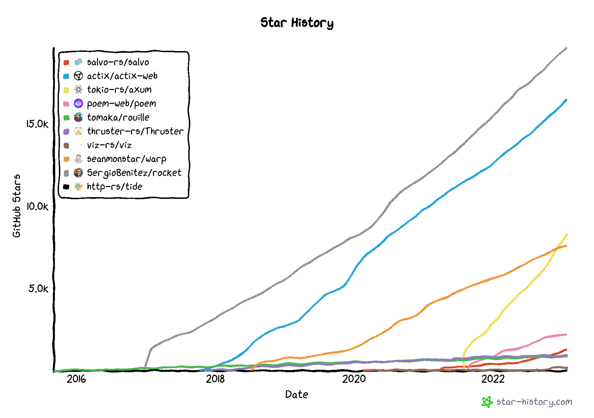
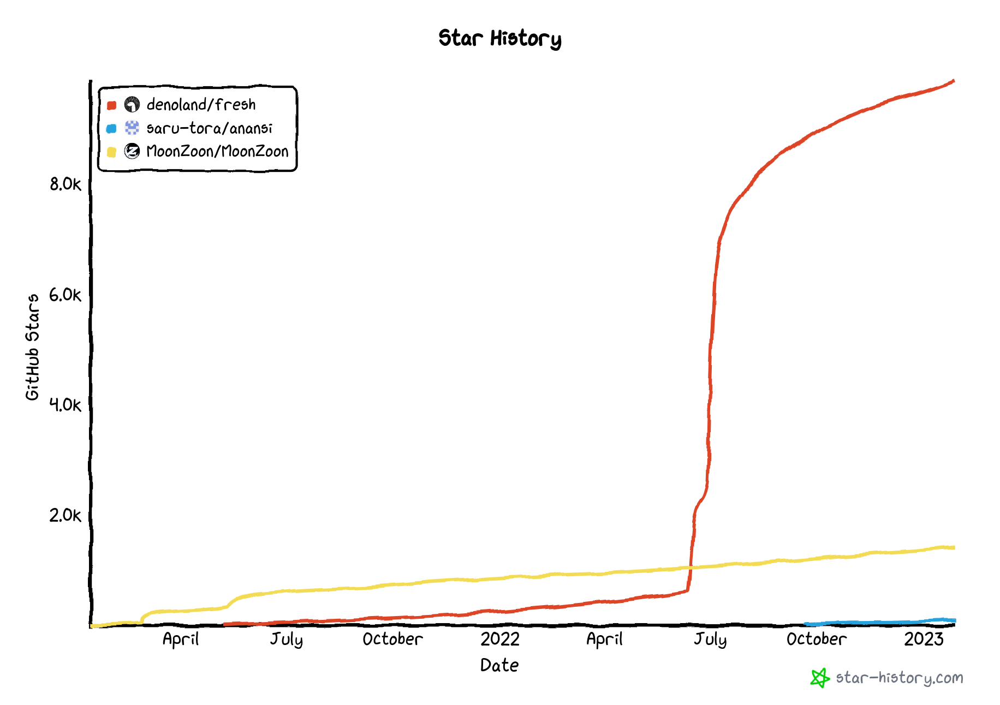

2023 年可以关注的 Rust Web 框架(后端)
2023-01-28T01:33:57+08:00 | 1分钟阅读 | 更新于 2023-01-28T01:33:57+08:00
概述
Rust 生态慢慢发展壮大，虽然有 areweyet 系列网站可以查看一些领域的情况，但是我最近关注的 web framework 领域的 https://www.arewewebyet.org/ 却不怎么更新了， 那么为就自己来收集一下最新的信息，本文只是收集一些活跃的项目， 不分排名，不做推荐，如果有机会花点时间去做点技术调研，再做推荐。
如果项目缺失，也欢迎大家补充
项目列表(后端框架)
- actix-web https://actix.rs/
- axum https://github.com/tokio-rs/axum
- warp https://github.com/seanmonstar/warp
- viz https://viz.rs/
- salvo https://salvo.rs/
- iron https://github.com/iron/iron
- tide https://github.com/http-rs/tide
- nickel https://github.com/nickel-org/nickel.rs
- gotham https://gotham.rs/
- poem https://github.com/poem-web/poem
- thruster https://github.com/thruster-rs/Thruster
- rouille https://github.com/tomaka/rouille
- trillium https://github.com/trillium-rs/trillium
- rocket https://rocket.rs/
项目列表(全栈类)
- Fresh https://fresh.deno.dev/
- MoonZoon https://github.com/MoonZoon/MoonZoon
- anansi https://github.com/saru-tora/anansi
github star 情况(选取部分)
后端框架

全栈类
